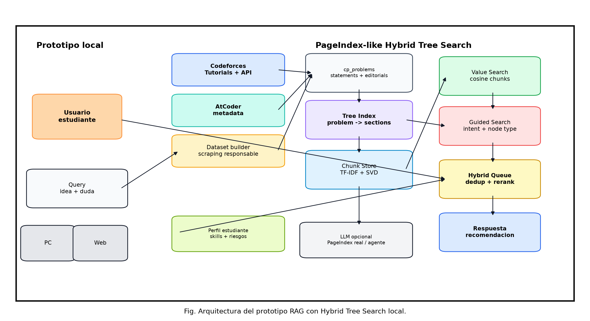
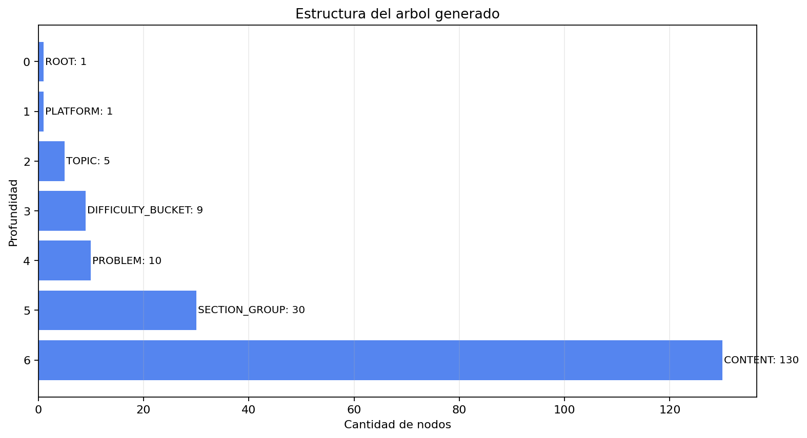
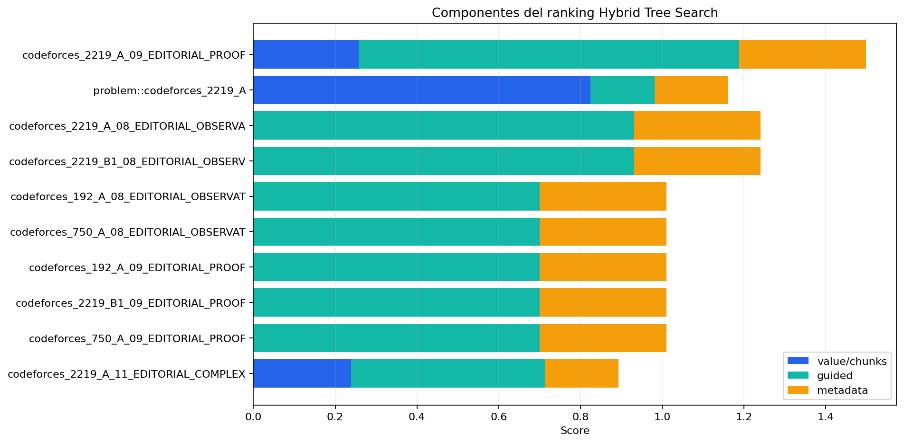
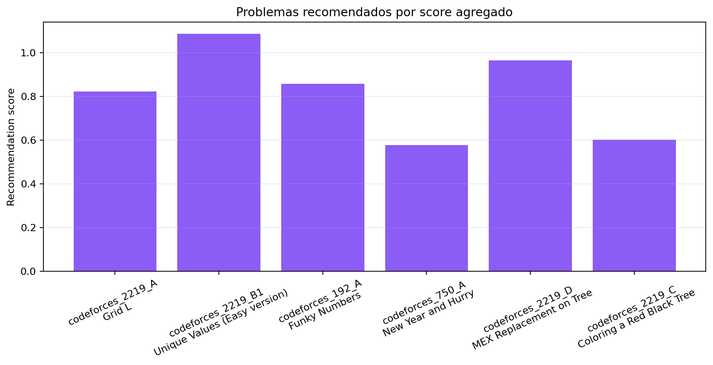

{
"problems": 10,
"page_nodes": 130,
"tree_nodes": 186,
"chunks": 207,
"queries": 4,
"embedding": {
"embedding_backend": "tfidf_svd_l2",
"chunks_indexed": 207,
"embedding_dim": 96
},
"tree_paths": {
"parquet": "C:\\Users\\Asus\\Desktop\\agent-pc\\data\\processed\\cp_tree_nodes_dataset.parquet",
"csv": "C:\\Users\\Asus\\Desktop\\agent-pc\\data\\processed\\cp_tree_nodes_dataset.csv",
"json": "C:\\Users\\Asus\\Desktop\\agent-pc\\data\\processed\\cp_tree_nodes_dataset.json"
},
"chunk_paths": {
"parquet": "C:\\Users\\Asus\\Desktop\\agent-pc\\data\\processed\\cp_tree_chunks_dataset.parquet",
"csv": "C:\\Users\\Asus\\Desktop\\agent-pc\\data\\processed\\cp_tree_chunks_dataset.csv",
"json": "C:\\Users\\Asus\\Desktop\\agent-pc\\data\\processed\\cp_tree_chunks_dataset.json"
},
"result_paths": {
"parquet": "C:\\Users\\Asus\\Desktop\\agent-pc\\data\\processed\\hybrid_tree_search_results.parquet",
"csv": "C:\\Users\\Asus\\Desktop\\agent-pc\\data\\processed\\hybrid_tree_search_results.csv",
"json": "C:\\Users\\Asus\\Desktop\\agent-pc\\data\\processed\\hybrid_tree_search_results.json"
},
"recommendation_paths": {
"parquet": "C:\\Users\\Asus\\Desktop\\agent-pc\\data\\processed\\hybrid_tree_recommendations.parquet",
"csv": "C:\\Users\\Asus\\Desktop\\agent-pc\\data\\processed\\hybrid_tree_recommendations.csv",
"json": "C:\\Users\\Asus\\Desktop\\agent-pc\\data\\processed\\hybrid_tree_recommendations.json"
},
"run_paths": {
"parquet": "C:\\Users\\Asus\\Desktop\\agent-pc\\data\\processed\\hybrid_tree_demo_runs.parquet",
"csv": "C:\\Users\\Asus\\Desktop\\agent-pc\\data\\processed\\hybrid_tree_demo_runs.csv",
"json": "C:\\Users\\Asus\\Desktop\\agent-pc\\data\\processed\\hybrid_tree_demo_runs.json"
},
"architecture_image": "C:\\Users\\Asus\\Desktop\\agent-pc\\comparison_assets\\hybrid_tree_architecture.png"
}




| query_id | global_problem_id | title | recommendation_score | reason |
|---|---|---|---|---|
| grid_l_proof | codeforces_2219_A | Grid L | 0.823504 | Recomendado porque recupero nodos relevantes para proof y coincide con temas implementation_constructive, math. |
| grid_l_proof | codeforces_2219_B1 | Unique Values (Easy version) | 0.663692 | Recomendado porque recupero nodos relevantes para proof y coincide con temas techniques, implementation_constructive, interactive. |
| grid_l_proof | codeforces_192_A | Funky Numbers | 0.576 | Recomendado porque recupero nodos relevantes para proof y coincide con temas techniques, implementation_constructive, math. |
| grid_l_proof | codeforces_750_A | New Year and Hurry | 0.576 | Recomendado porque recupero nodos relevantes para proof y coincide con temas techniques, implementation_constructive, math. |
| unique_values_formula | codeforces_2219_B1 | Unique Values (Easy version) | 1.085767 | Recomendado porque recupero nodos relevantes para algorithm y coincide con temas techniques, implementation_constructive, interactive. |
| unique_values_formula | codeforces_192_A | Funky Numbers | 0.856871 | Recomendado porque recupero nodos relevantes para algorithm y coincide con temas techniques, implementation_constructive, math. |
| tree_mex_implementation | codeforces_2219_D | MEX Replacement on Tree | 0.964414 | Recomendado porque recupero nodos relevantes para edge_cases y coincide con temas data_structures, implementation_constructive, math. |
| tree_mex_implementation | codeforces_2219_C | Coloring a Red Black Tree | 0.601333 | Recomendado porque recupero nodos relevantes para edge_cases y coincide con temas graphs, dynamic_programming, greedy. |
| weird_chessboard_proof | codeforces_2219_E | Weird Chessboard | 1.210523 | Recomendado porque recupero nodos relevantes para proof y coincide con temas implementation_constructive, math. |
| weird_chessboard_proof | codeforces_2219_A | Grid L | 0.971076 | Recomendado porque recupero nodos relevantes para proof y coincide con temas implementation_constructive, math. |
| weird_chessboard_proof | codeforces_2219_C | Coloring a Red Black Tree | 0.866 | Recomendado porque recupero nodos relevantes para proof y coincide con temas graphs, dynamic_programming, greedy. |
| weird_chessboard_proof | codeforces_2219_B1 | Unique Values (Easy version) | 0.834333 | Recomendado porque recupero nodos relevantes para proof y coincide con temas techniques, implementation_constructive, interactive. |
| query_id | rank | node_type | title | hybrid_score | value_score | guided_score | metadata_bonus | reason |
|---|---|---|---|---|---|---|---|---|
| grid_l_proof | 1 | EDITORIAL_PROOF | Grid L - Editorial Proof | 0.823504 | 0.257761 | 0.930769 | 0.31 | recibio score vectorial desde chunks similares; coincide con la intencion detectada de la query; su tipo EDITORIAL_PROOF encaja con la etapa PROOF; recibio bonus por metadata/tags/filtros |
| grid_l_proof | 2 | PROBLEM | Grid L | 0.751167 | 0.825059 | 0.156923 | 0.18 | recibio score vectorial desde chunks similares; coincide con la intencion detectada de la query; recibio bonus por metadata/tags/filtros |
| grid_l_proof | 3 | EDITORIAL_OBSERVATION | Grid L - Editorial Observation | 0.663692 | 0.0 | 0.930769 | 0.31 | coincide con la intencion detectada de la query; su tipo EDITORIAL_OBSERVATION encaja con la etapa PROOF; recibio bonus por metadata/tags/filtros |
| grid_l_proof | 4 | EDITORIAL_OBSERVATION | Unique Values (Easy version) - Editorial Observation | 0.663692 | 0.0 | 0.930769 | 0.31 | coincide con la intencion detectada de la query; su tipo EDITORIAL_OBSERVATION encaja con la etapa PROOF; recibio bonus por metadata/tags/filtros |
| grid_l_proof | 5 | EDITORIAL_OBSERVATION | Funky Numbers - Editorial Observation | 0.576 | 0.0 | 0.7 | 0.31 | coincide con la intencion detectada de la query; su tipo EDITORIAL_OBSERVATION encaja con la etapa PROOF; recibio bonus por metadata/tags/filtros |
| grid_l_proof | 6 | EDITORIAL_OBSERVATION | New Year and Hurry - Editorial Observation | 0.576 | 0.0 | 0.7 | 0.31 | coincide con la intencion detectada de la query; su tipo EDITORIAL_OBSERVATION encaja con la etapa PROOF; recibio bonus por metadata/tags/filtros |
| grid_l_proof | 7 | EDITORIAL_PROOF | Funky Numbers - Editorial Proof | 0.576 | 0.0 | 0.7 | 0.31 | coincide con la intencion detectada de la query; su tipo EDITORIAL_PROOF encaja con la etapa PROOF; recibio bonus por metadata/tags/filtros |
| grid_l_proof | 8 | EDITORIAL_PROOF | Unique Values (Easy version) - Editorial Proof | 0.576 | 0.0 | 0.7 | 0.31 | coincide con la intencion detectada de la query; su tipo EDITORIAL_PROOF encaja con la etapa PROOF; recibio bonus por metadata/tags/filtros |
| grid_l_proof | 9 | EDITORIAL_PROOF | New Year and Hurry - Editorial Proof | 0.576 | 0.0 | 0.7 | 0.31 | coincide con la intencion detectada de la query; su tipo EDITORIAL_PROOF encaja con la etapa PROOF; recibio bonus por metadata/tags/filtros |
| grid_l_proof | 10 | EDITORIAL_COMPLEXITY | Grid L - Editorial Complexity | 0.508262 | 0.239033 | 0.473846 | 0.18 | recibio score vectorial desde chunks similares; coincide con la intencion detectada de la query; recibio bonus por metadata/tags/filtros |
| grid_l_proof | 11 | EDITORIAL_FULL | Grid L - Editorial Full | 0.507409 | 0.265946 | 0.427692 | 0.18 | recibio score vectorial desde chunks similares; coincide con la intencion detectada de la query; recibio bonus por metadata/tags/filtros |
| grid_l_proof | 12 | EDITORIAL_REASONING | Editorial Reasoning | 0.502428 | 0.472899 | 0.076923 | 0.18 | recibio score vectorial desde chunks similares; coincide con la intencion detectada de la query; recibio bonus por metadata/tags/filtros |
| unique_values_formula | 1 | PROBLEM | Unique Values (Easy version) | 1.085767 | 0.790915 | 0.83 | 0.28 | recibio score vectorial desde chunks similares; coincide con la intencion detectada de la query; recibio bonus por metadata/tags/filtros |
| unique_values_formula | 2 | EDITORIAL_OBSERVATION | Unique Values (Easy version) - Editorial Observation | 0.90875 | 0.0 | 1.3125 | 0.41 | coincide con la intencion detectada de la query; su tipo EDITORIAL_OBSERVATION encaja con la etapa ALGORITHM; recibio bonus por metadata/tags/filtros |
| unique_values_formula | 3 | PROBLEM | Funky Numbers | 0.856871 | 0.268502 | 1.08 | 0.28 | recibio score vectorial desde chunks similares; coincide con la intencion detectada de la query; recibio bonus por metadata/tags/filtros |
| unique_values_formula | 4 | EDITORIAL_ALGORITHM | Unique Values (Easy version) - Editorial Algorithm | 0.8375 | 0.0 | 1.125 | 0.41 | coincide con la intencion detectada de la query; su tipo EDITORIAL_ALGORITHM encaja con la etapa ALGORITHM; recibio bonus por metadata/tags/filtros |
| unique_values_formula | 5 | EDITORIAL_COMPLEXITY | Unique Values (Easy version) - Editorial Complexity | 0.8375 | 0.0 | 1.125 | 0.41 | coincide con la intencion detectada de la query; su tipo EDITORIAL_COMPLEXITY encaja con la etapa ALGORITHM; recibio bonus por metadata/tags/filtros |
| unique_values_formula | 6 | STATEMENT | Unique Values (Easy version) - Statement | 0.824698 | 0.383626 | 0.8075 | 0.28 | recibio score vectorial desde chunks similares; coincide con la intencion detectada de la query; recibio bonus por metadata/tags/filtros |
| unique_values_formula | 7 | EDITORIAL_FULL | Funky Numbers - Editorial Full | 0.785222 | 0.205035 | 0.995 | 0.28 | recibio score vectorial desde chunks similares; coincide con la intencion detectada de la query; recibio bonus por metadata/tags/filtros |
| unique_values_formula | 8 | UNDERSTANDING | Understanding | 0.775708 | 0.378158 | 0.6875 | 0.28 | recibio score vectorial desde chunks similares; coincide con la intencion detectada de la query; recibio bonus por metadata/tags/filtros |
| unique_values_formula | 9 | NOTES | Unique Values (Easy version) - Notes | 0.77466 | 0.226306 | 0.9325 | 0.28 | recibio score vectorial desde chunks similares; coincide con la intencion detectada de la query; recibio bonus por metadata/tags/filtros |
| unique_values_formula | 10 | EDITORIAL_COMPLEXITY | Funky Numbers - Editorial Complexity | 0.76625 | 0.0 | 0.9375 | 0.41 | coincide con la intencion detectada de la query; su tipo EDITORIAL_COMPLEXITY encaja con la etapa ALGORITHM; recibio bonus por metadata/tags/filtros |
| unique_values_formula | 11 | EDITORIAL_ALGORITHM | Funky Numbers - Editorial Algorithm | 0.76625 | 0.0 | 0.9375 | 0.41 | coincide con la intencion detectada de la query; su tipo EDITORIAL_ALGORITHM encaja con la etapa ALGORITHM; recibio bonus por metadata/tags/filtros |
| unique_values_formula | 12 | EDITORIAL_OBSERVATION | Funky Numbers - Editorial Observation | 0.76625 | 0.0 | 0.9375 | 0.41 | coincide con la intencion detectada de la query; su tipo EDITORIAL_OBSERVATION encaja con la etapa ALGORITHM; recibio bonus por metadata/tags/filtros |